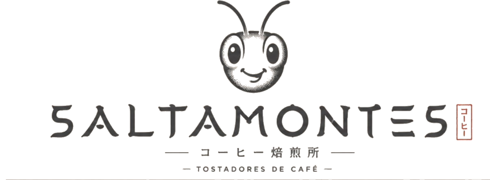

Saltamontes
Saltamontes


Destacado 今月の一杯
Fresa | Vino tinto | Chocolate oscuro | Sedoso
Microlote Reserva — un natural de fermentación controlada, cosechado grano a grano a 1.700 msnm en los Andes venezolanos. Edición limitada, tostado por un Q Arabica Grader.
El café コーヒー
Cafés de origen
Lotes pequeños de fincas de altura, evaluados con protocolo SCA.

Táchira
Panela · Mandarina · Cacao

Mérida
Durazno · Miel · Almendra

Microlote Reserva
Fresa · Vino tinto · Chocolate oscuro

Mezcla de casa
Chocolate · Nuez · Caramelo
 山の畑 · Los Andes
山の畑 · Los AndesOrigen 産地
No nos conformamos con un café correcto
Altura, sombra, cosecha selectiva y procesos hechos con paciencia. Como los tostadores japoneses que admiro: precisión, respeto por el grano y ni un atajo. Eso separa un buen café de uno que no se te olvida.
Nuestra historiaAprende 学ぶ
Cursos
Con quien lo hace todos los días. Presencial o en línea, con base en los protocolos de la SCA.
Introducción al café de especialidad
Del origen a la taza: variedades, procesos, molienda y extracción.
Catación y análisis sensorial
Entrena tu paladar con la metodología que uso como Q Grader.
Métodos de filtrado y barismo
V60, prensa, aeropress y espresso. Recetas y técnica para servir parejo.
Procesos y fermentaciones post-cosecha
Para caficultores: cómo el proceso decide la calidad en la taza.

Mayorista 卸売
Para cafeterías
No solo te vendo café: dejo tu barra funcionando. Grano por volumen, un tueste pensado para tu método y capacitación para tus baristas.
- Entregas fijas y precio de volumen
- Perfil de tueste para espresso o filtrado
- Recetas calibradas en tu barra
- Fichas de cada café para tu carta
焙煎 · ConsultoríaConsultoría 相談
De la semilla a la barra
Acompaño a fincas, torrefactoras y cafeterías a subir su calidad y encontrar su identidad de taza, con criterio de Q Grader.
- Asesoría en fincas — agronomía, procesos y microlotes
- Asesoría en torrefactoras — curvas y control de calidad
- Análisis sensorial y catas SCA de tus lotes
 物語 · En el cafetal
物語 · En el cafetalLa historia 物語
Del asfalto y el cielo a la montaña
Soy Raúl Martínez, ingeniero civil y piloto comercial de formación. En algún punto cambié todo por las fincas de altura, la cereza madura y la mesa de cata. Hoy soy Q Arabica Grader y Q Processing Expert, y bajo Saltamontes tuesto, enseño y acompaño a productores.
HablemosComunidad 仲間
Únete a la manada
Comparto catas, tips y la vida en la montaña con más de 28.000 personas. Sígueme —o escríbeme directo y te respondo yo mismo. Sin pasarelas: trato de persona a persona.
Escríbeme por WhatsApp